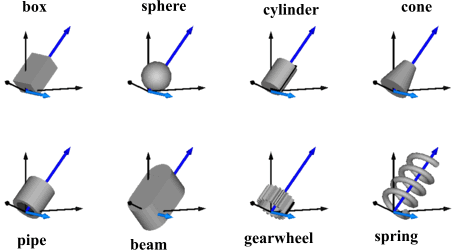

ShapeTypeType of shape (box, sphere, cylinder, pipecylinder, cone, pipe, beam, gearwheel, spring, |
Information
This information is part of the Modelica Standard Library maintained by the Modelica Association.
Type ShapeType is used to define the shape of the visual object as parameter String. Usually, "shapeType" is used as instance name. The following values for shapeType are possible, e.g., shapeType="box":

The dark blue arrows in the figure above are directed along variable lengthDirection. The light blue arrows are directed along variable widthDirection. The coordinate systems in the figure represent frame_a of the Shape component.
Additionally, external shapes can be specified as (not all options might be supported by all tools):
- "1", "2", …
define external shapes specified in DXF format in files "1.dxf", "2.dxf", … The DXF-files must be found either in the current directory or in the directory where the Shape instance is stored that references the DXF file. This (very limited) option should not be used for new models. Example:
shapeType="1". - "modelica://<Modelica-name>/<relative-path-file-name>"
characterizes the file that is stored under the location of the <Modelica-name> library path with the given relative file name. Example:
shapeType = "modelica://Modelica/Resources/Data/Shapes/Engine/piston.dxf". - "file://<absolute-file-name>"
characterizes an absolute file name in the file system. Example:
shapeType="file://C:/users/myname/shapes/piston.dxf".
The supported file formats are tool dependent. Most tools support at least DXF-files (a tool might support 3-dim. Face of the DXF format only), but may support other format as well (such as stl, obj, 3ds). Since visualization files contain color and other data, the corresponding information in the model is usually ignored.
Type Information
| String |
|---|
Used in Components (9)
|
Modelica.Mechanics.MultiBody.Forces General line force component with an optional point mass on the connection line |
|
|
Modelica.Mechanics.MultiBody.Joints Universal - spherical joint aggregation (1 constraint, no potential states) |
|
|
Modelica.Mechanics.MultiBody.Parts Frame fixed in the world frame at a given position |
|
|
Modelica.Mechanics.MultiBody.Parts Fixed translation of frame_b with respect to frame_a |
|
|
Modelica.Mechanics.MultiBody.Parts Fixed translation followed by a fixed rotation of frame_b with respect to frame_a |
|
|
Modelica.Mechanics.MultiBody.Parts Rigid body with mass, inertia tensor, different shapes for animation, and two frame connectors (12 potential states) |
|
|
Modelica.Mechanics.MultiBody.Visualizers Visualizing an elementary shape with dynamically varying shape attributes (has one frame connector) |
|
|
Modelica.Mechanics.MultiBody.Visualizers Visualizing an elementary shape with dynamically varying shape attributes (has two frame connectors) |
|
|
Modelica.Utilities.Internal.PartialModelicaServices.Animation Interface for 3D animation of elementary shapes |